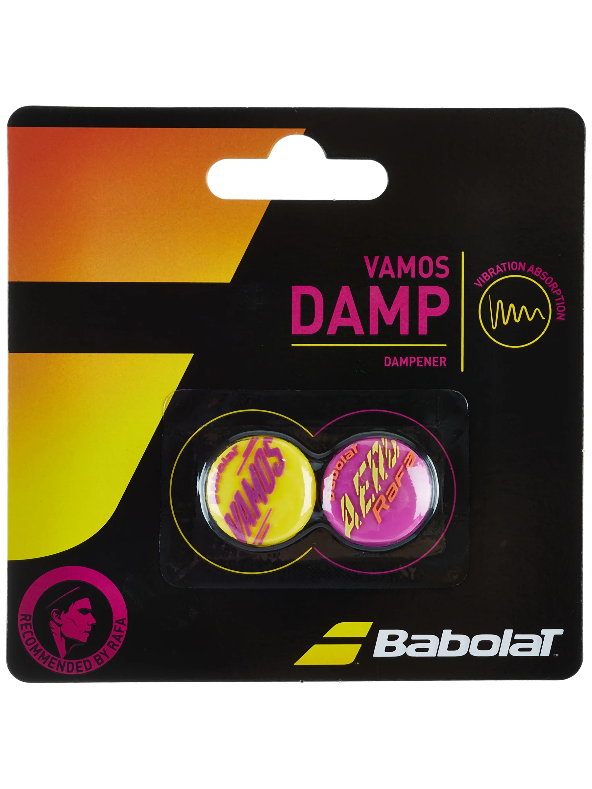

Vamos! The Babolat Vamos Rafa dampener is designed to reduce unwanted vibrations and shock on the tennis court. This pack includes two dampeners that fit any racquet. Pair them with a Babolat Pure Aero Rafa for a perfect cosmetic match and enhance your playing experience.
